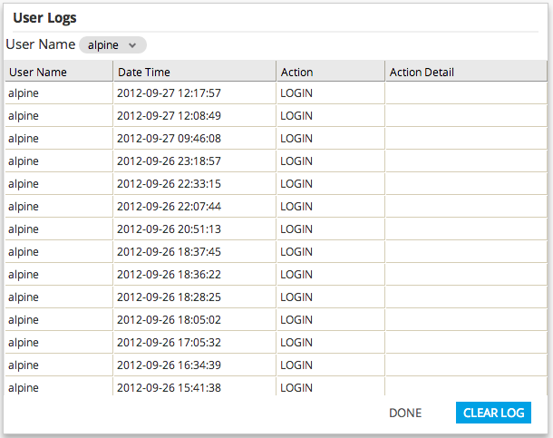

The user logs provide information on user access. An admin is able to view the logs of all users. An ordinary user can only view his or her own logs. To access User Logs click the user drop down button and click User Logs.
Click "Clear log" button to clear current user Logs.
